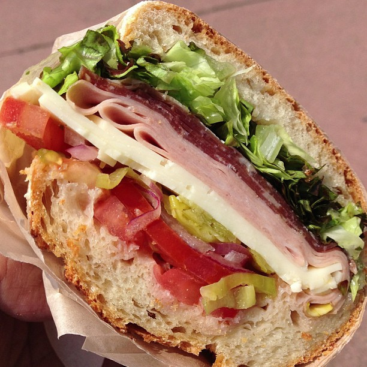

Italian Melt

Easy Italian Melt Sandwich
This recipe makes for a great lunch or a quick and easy dinner for one
Ingredients
- 2 slices of Bread (I prefer an artisan bread)
- 1/4 cup shredded mozzarella cheese
- 4-6 slices of pepperoni
- 1-2 slices deli ham
- 1-2 slices Salami
- 2 tablespoons pesto
- Butter (as needed for toasting)
- Dipping Sauce (I prefer Marinara)
Instructions
- Preheat griddle or pan on medium heat
- While griddle is preheating, butter one side of each slice of bread. (season with garlic or other seasoning if preferred)
- Place bread on griddle, buttered side down.
- Add mozzarella to one slice as the bread is toasted
- Add toppings (pepperoni, salami, ham) to the cheesy side
- continue to toast each slice of bread until toasted to your preference.
- Allow cheese to melt and serve with dipping sauce such as marinara
Feel free to add or substitute toppings and meat options to suit your tastes
This recipe is unique to the creator of this page